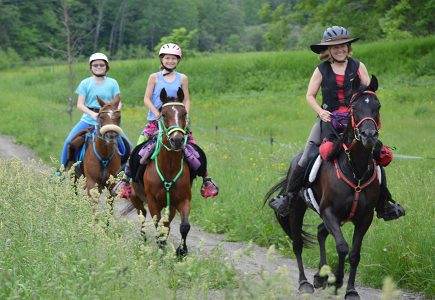

Endurance riding, a competition usually of 50 to 100 miles (160 km) or more, over mountainous or
other natural terrain, with scheduled stops to take the horses' vital signs, check soundness and
verify that the horse is fit to continue. The first horse to finish and be confirmed by the
veterinarian as fit to continue is the winner.
Hacking, or pleasure riding.
Hunter Pacing is a sport where a horse and rider team travel a trail at speeds based the ideal
conditions for the horse, with competitors seeking to ride closest to that perfect time. Hunter
paces are usually held in a series. Hunter paces are usually a few miles long and covered mostly
at a canter or gallop..
Ride and Tie is a form of endurance riding in which teams of 3 (two humans and one horse)
alternate running and riding.
Steeplechase, a distance horse race with diverse fence and ditch obstacles.
Trail Riding, pleasure riding any breed horse, any style across the land.

From: https://en.wikipedia.org/wiki/Equestrianism